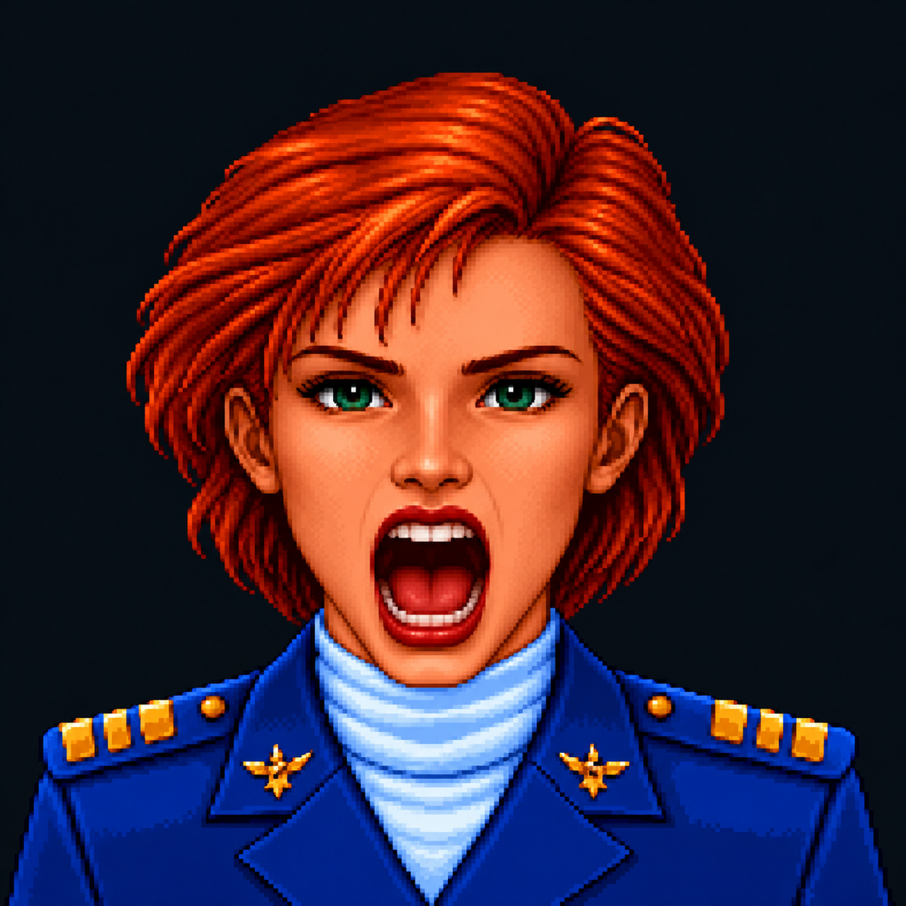

Try the blended talking face with Mumble →
One frozen master. Six edited expressions. Soft local masks inside a fixed facial permission region. Hair, uniform and background always come from the master.

Loading assets…
Try Maximum shout + Tight mouth, then enlarge the area. Try Angry + Whole inner face to include the brows. Combine Shout + Wide eyes. Even a huge mask is clipped by the fixed facial permission region. Step transitions expose registration errors; smooth transitions can introduce double lips or eyes at intermediate strengths.
Known limit: the maximal shout lowers the chin into the collar. The protected blend deliberately preserves the collar, so that jaw motion is clipped. Treat it as a failure case for this fixed silhouette approach. Small speech, eyelids, cheeks and brows stay within its intended range. This tests masking, not a facial rig. Original two-frame comparison · Mumble experiment